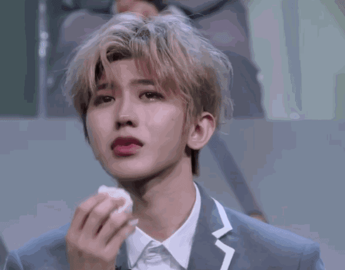

蔡徐坤（KUN），1998年8月2日出生于浙江省温州市，祖籍湖南怀化 [1] ，中国内地男歌手、演员、音乐制作人。
2012年4月，参加综艺节目《向上吧！少年》，并进入全国200强 [2] ；8月，参演个人首部偶像剧《童话二分之一》 [3] 。2014年3月，参演个人首部电影《完美假妻168》。2018年1月，参加偶像男团竞演养成类真人秀《偶像练习生》，并在赛后担任NINE PERCENT的队长 [4] ；8月2日，发行个人首张EP《1》 [5] ；随后，获得出道后首个个人音乐类奖项亚洲新歌榜2018年度盛典最受欢迎潜力男歌手奖 [6] ；8月23日，发行单曲《Wait Wait Wait》 [7] ；12月，获第十二届音乐盛典咪咕汇年度最佳彩铃销量歌手 [8] 、第十五届MAHB年度先生盛典年度先生奖 [9] 、今日头条年度盛典年度偶像人物 [10] 。2019年1月，被授予“中牙友好大使暨中牙杰出青年领袖人物”称号 [11] ；2月，首登北京台春晚便包揽词曲，为其创作歌曲《那年春天》 [12] ；2月18日，发布单曲《没有意外》 [13] ；3月22日，发布海外公演主题曲《Bigger》 [14] ；4月19日，发布单曲《Hard To Get》 [15] ；7月26日，发行专辑《YOUNG》 [16] ；8月，获得2019华人歌曲音乐盛典年度最佳舞台演绎男歌手以及2019华人杰出青年歌手 [17] ；10月6日，NINE PERCENT组合正式解散 [18] ，蔡徐坤继续个人演艺事业；11月15日，发行单曲《重生》 [19] 。2020年3月，担任《青春有你第二季》青春制作人代表 [20] ；4月24日，确认加盟户外竞技真人秀《奔跑吧第四季》 [21]